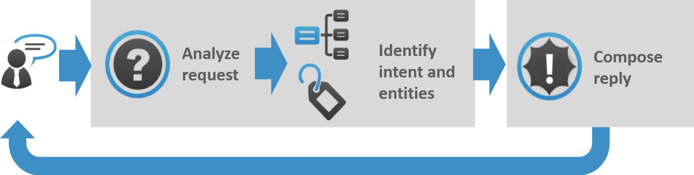
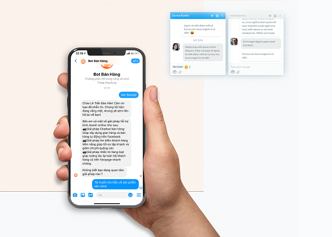
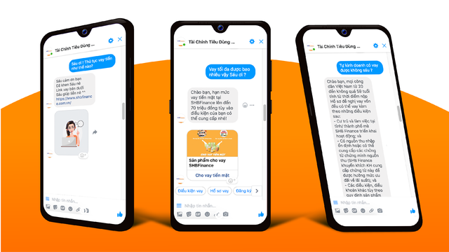

Gần đây, các công cụ mới được thiết kế để đơn giản hóa sự tương tác giữa con người và máy tính đã được tung ra thị trường: Chatbots hoặc Virtual Assistants. Chatbot và trợ lý ảo là một số công cụ mới nhất được thiết kế để đơn giản hóa sự tương tác giữa con người và máy tính.
Chatbot là gì?
Chatbot là một phần mềm trí tuệ nhân tạo (AI) có thể mô phỏng 01 cuộc trò chuyện với người dùng bằng ngôn ngữ tự nhiên thông qua các ứng dụng nhắn tin, trang web, ứng dụng di động hoặc qua điện thoại.

Chatbot có thể sử dụng như một công cụ hiệu quả giúp cho việc chăm sóc khách hàng được thực hiện tự động 24/7. Chatbot nhanh hơn con người trong việc đưa ra câu trả lời. Sử dụng chatbot sẽ giúp doanh nghiệp không cần thuê nhân viên để chăm sóc khách hàng. Điều này giúp cho chi phí marketing của doanh nghiệp được giảm xuống.
Cách hoạt động của một chatbot
Có hai nhiệm vụ cốt lõi khác nhau của một chatbot:
1) Phân tích yêu cầu của người dùng
2) Gửi lại phản hồ

Một chatbot trả về phản hồi dựa trên thông tin đầu vào từ người dùng. Quá trình này trông có vẻ đơn giản nhưng trong thực tế, mọi thứ khá phức tạp.
1) Phân tích yêu cầu của người dùng: Đây là nhiệm vụ đầu tiên mà một chatbot thực hiện. Nó phân tích yêu cầu của người dùng để xác định ý định của người dùng và trích xuất các thực thể có liên quan.
.png)
Ví dụ về phân tích yêu cầu của người dùng
Khả năng xác định mục đích của người dùng và trích xuất dữ liệu cũng như các thực thể có liên quan có trong yêu cầu của người dùng là điều kiện đầu tiên và là bước phù hợp nhất cốt lõi của một chatbot: Nếu bạn không thể hiểu chính xác yêu cầu của người dùng, bạn sẽ không có thể cung cấp câu trả lời chính xác.
2) Gửi lại phản hồi: Khi mục đích của người dùng đã được xác định, chatbot phải cung cấp phản hồi phù hợp nhất cho yêu cầu của người dùng. Câu trả lời có thể là:
Tại sao chatbot lại quan trọng?
Ứng dụng Chatbot hợp lý hóa các tương tác giữa con người và dịch vụ, nâng cao trải nghiệm của khách hàng. Đồng thời, họ cung cấp cho các công ty những cơ hội mới để cải thiện quy trình tương tác với khách hàng và hiệu quả hoạt động bằng cách giảm chi phí dịch vụ khách hàng điển hình.
Để thành công, một giải pháp chatbot phải có thể thực hiện hiệu quả cả hai nhiệm vụ này. Sự hỗ trợ của con người đóng vai trò quan trọng ở đây: Bất kể hình thức tiếp cận và nền tảng nào, sự can thiệp của con người là rất quan trọng trong việc định cấu hình, đào tạo và tối ưu hóa hệ thống chatbot.
Các loại chatbot hiện nay
Có nhiều cách để phân loại chatbot. Nếu xét theo khía cạnh dịch vụ thì có thể chia chatbot thành 2 loại, đó là:
Chatbot bán hàng là gì?
Là công cụ hỗ trợ bán hàng hoạt động 24/7. Chatbot cập nhật liên tục, giúp bạn không bỏ sót đơn của khách hàng.
Ưu điểm nổi bật của chatbot là đơn giản, dễ sử dụng. Chatbot bán hàng không cần dùng các phần mềm xử lý ngôn ngữ tự nhiên mà chỉ có các block tương tác đơn giản (text/image/gallery,…) để tương tác với khách hàng. Kịch bản trả lời cũng được xây dựng sẵn từ trước.

Chatbot chăm sóc khách hàng là gì?
Loại chatbot này thường được các trung tâm chăm sóc khách hàng lớn sử dụng để trả lời các câu hỏi thường gặp theo kịch bản hoặc dữ liệu có sẵn.
Đối với những câu hỏi đơn giản, chatbot sẽ tự trả lời. Với các câu hỏi phức tạp hơn, chatbot sẽ chuyển đến nhân viên chăm sóc khách hàng để giải quyết. Trong quá trình hoạt động, chatbot sẽ tự học để đưa ra những câu trả lời chính xác và phù hợp với thực tế hơn.
Trong khi đó, nếu phân loại dựa trên nền tảng đàm thoại thì chatbot có các dạng chủ yếu là: Facebook Messenger, Website, Slack, Telegram,…
Ngoài ra, bạn cũng có thể phân loại chatbot theo nền tảng AI phát triển chatbot hoặc dựa trên trải nghiệm người dùng.
Ngày nay, chatbot được ứng dụng rất rộng rãi để thực hiện các công việc sau:
Chatbot chăm sóc khách hàng là gì?

Cá nhân hóa trải nghiệm bán hàng
Dựa trên các cơ sở dữ liệu thu thập được từ lịch sử giao dịch trước đó. Chatbot có khả năng ghi nhớ mọi thông tin cá nhân của khách hàng như: tên, tuổi, nghề nghiệp, sở thích,… Như vậy, ngay từ khi nhận diện được yêu cầu từ khách hàng, Chatbot sẽ có thể trả lời chính xác. Sau đó đưa ra các tư vấn mua sắm phù hợp cho từng cá nhân. Những tư vấn này dựa trên những sở thích, xu hướng mà họ quan tâm.
Giảm thiểu chi phí
Chatbot có thể thay thế con người đảm nhận toàn bộ nhiệm vụ từ giới thiệu sản phẩm, báo giá, đưa ra lời khuyên cho đến chốt đơn hàng, xin feedback,… từ đó, giúp bạn tiết kiệm được khoản lớn chi phí trả cho nhân viên sale, chăm sóc khách hàng. Theo nghiên cứu Juniper Research đến năm 2022, chatbot sẽ có thể giúp các công ty tiết kiệm được khoảng 8 tỷ USD ngân sách dành cho việc chăm sóc khách hàng.
Phản hồi khách hàng nhanh chóng
Con người sẽ có lúc cần nghỉ ngơi nhưng chatbot thì không. Một chatbot có thể hoạt động 24/7 xuyên suốt 365 ngày. Chatbot còn tiếp nhận và xử lý yêu cầu khách hàng tự động, nhanh chóng. Điều này sẽ giúp tăng trải nghiệm mua sắm cho khách hàng và nâng cao tỷ lệ chốt đơn, từ đó tăng doanh số dễ dàng hơn.
Chúc bạn sẽ gặt hái được thật nhiều thành công khi ứng dụng chatbot vào việc kinh doanh trực tuyến của mình!